Foundations of Geovisualization
The 2D Map - CS-GY 6313 - Fall 2026
2026-10-23
Foundations of Geovisualization
The 2D Map
Part 1: The Power of Spatial Analysis
John Snow’s 1854 Cholera Map
What is a map for?
- Analysis
- Communication
Snow’s Innovation:
- He didn’t just plot data
- He used spatial relationships to solve a problem
- Deaths clustered around the Broad Street pump
- Had the handle removed → outbreak stopped

Historical Milestones in Cartography
Ptolemy’s Geographica (c. 150 AD)
- Foundation of modern cartography
- Latitude and longitude coordinate system
- Over 2000 years of influence
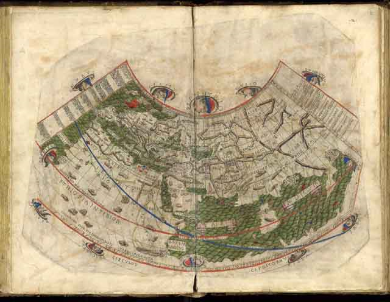
Minard’s Flow Map (1869)
- Multiple variables in one visualization:
- Troop size (width)
- Temperature (bottom scale)
- Location (geography)
- Direction (color: tan = advance, black = retreat)
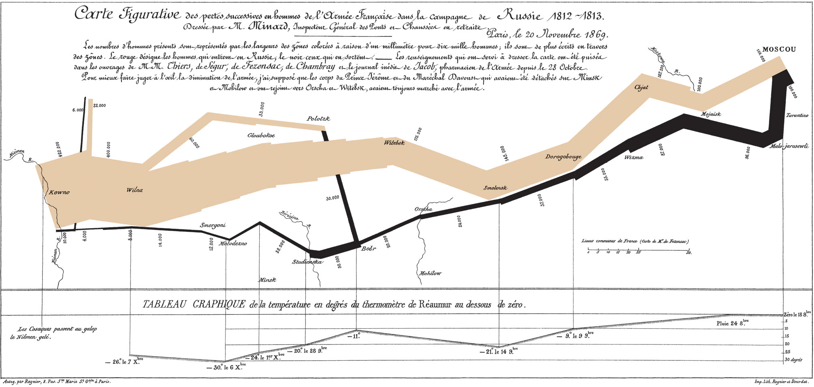
Part 2: When to Use a Map?
The Critical Question
“Not all geographical data should be on a map.”
When is the bar chart better?
- For ranking and lookup tasks
- “Which city has the highest sales?”
- “What are the top 5 cities?”
When is the map better?
- For finding spatial patterns
- For identifying clusters
- For understanding geographic relationships
- “Are sales clustered along the Front Range?”
Map vs. Bar Chart: The Same Data
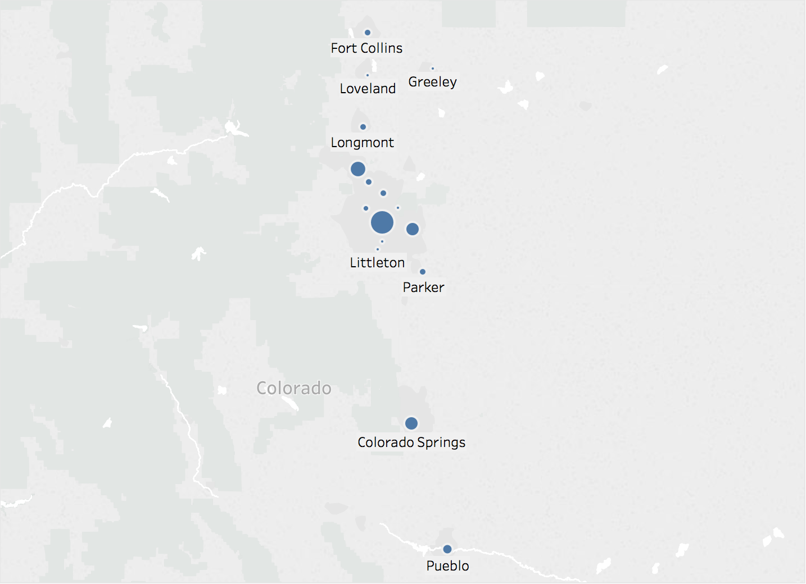
Better for: Spatial patterns, regional clustering
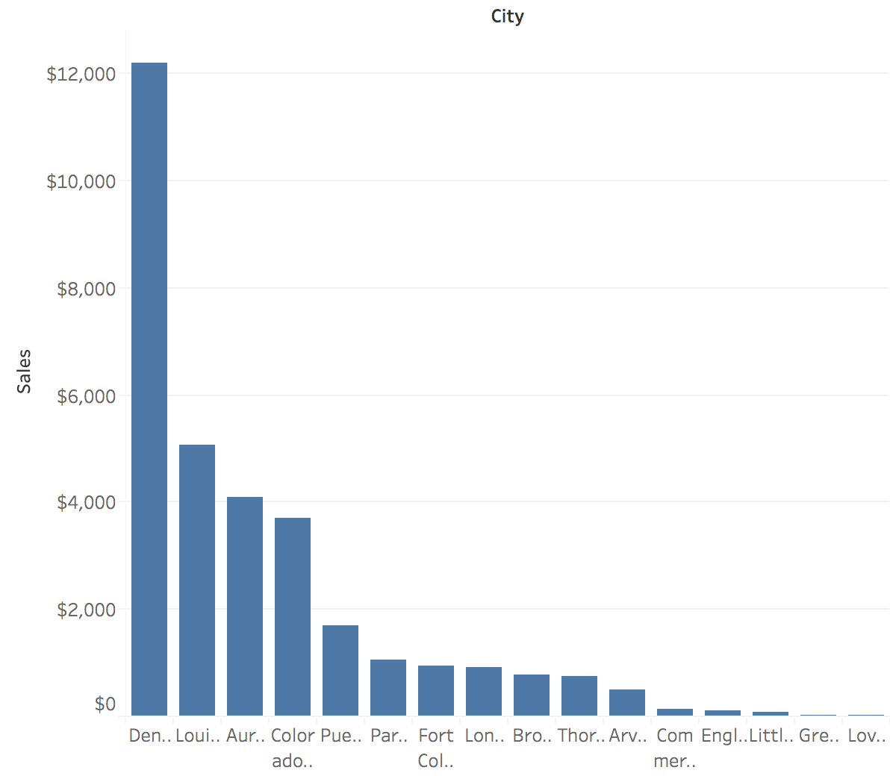
Better for: Ranking, exact value lookup
Part 3: The Fundamental Problem
Projections: Mapping 3D to 2D
The Challenge:
- Earth is a 3D sphere
- Screens and paper are 2D planes
- You cannot flatten a sphere without distortion
You must choose what to distort:
- Shape
- Area
- Distance
Any 2D map is a lie. The question is: what kind of lie?
Projection Types: What They Preserve
Conformal
Preserves shape & angles
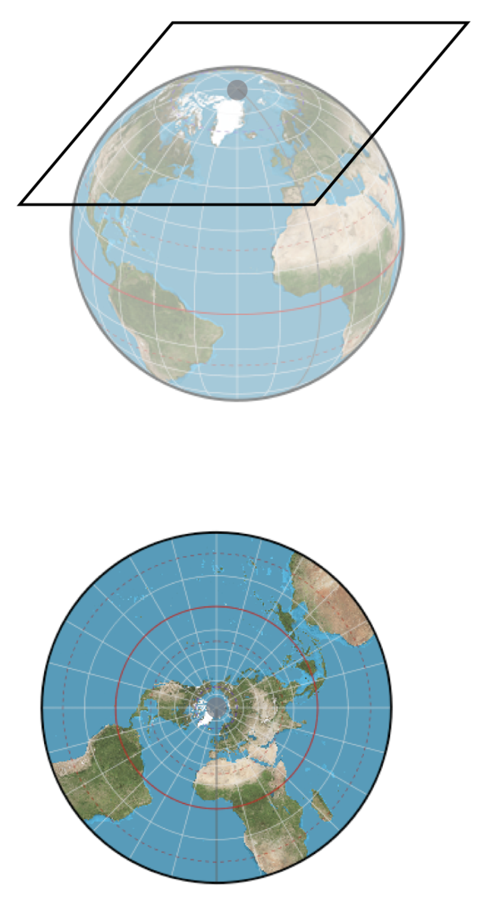
Use: Navigation (constant compass bearing)
Equal-Area
Preserves relative area
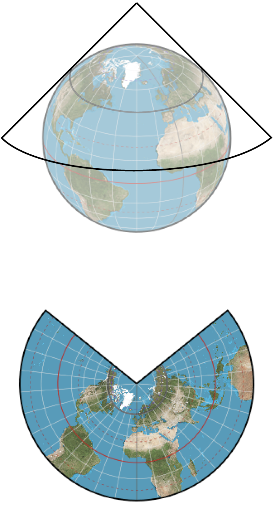
Use: Thematic maps (choropleths)
Equidistant
Preserves distance from center
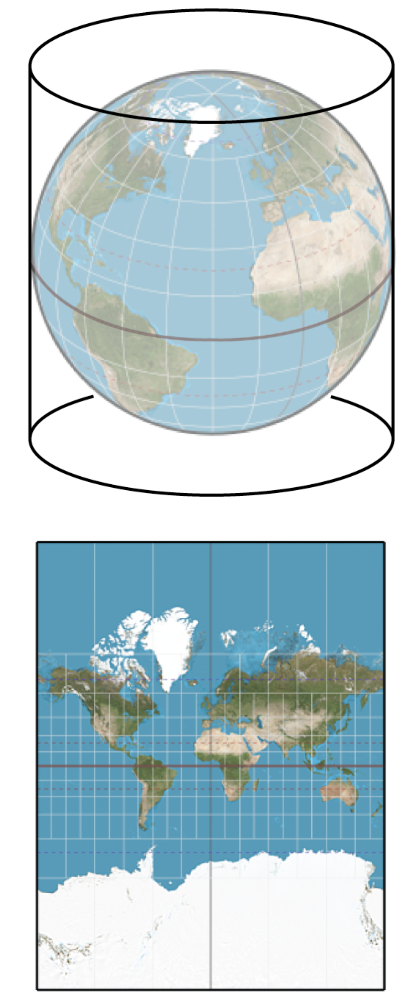
Use: Distance calculations
Tissot’s Indicatrix: Visualizing Distortion
Mercator (Conformal)
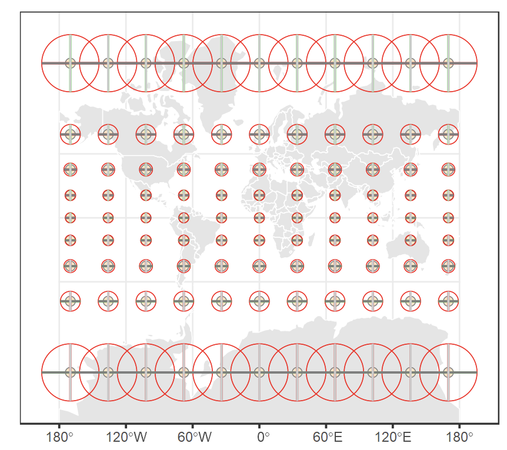
- Circles remain circles (shape preserved)
- But circles get huge near poles (area distorted)
Equal-Area
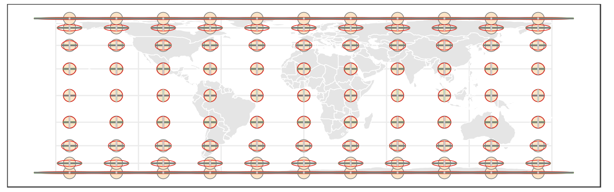
- Circles become ellipses (shape distorted)
- But all have same area (area preserved)
Interactive Tissot tool: mgimond.github.io/tissot
Projection Hall of Shame/Fame
Mercator: The Infamous Example
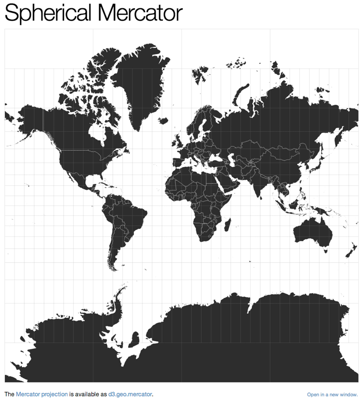
The Problem: Greenland looks bigger than Africa
Reality: Africa is 14× larger than Greenland
Albers Equal-Area: The Fix
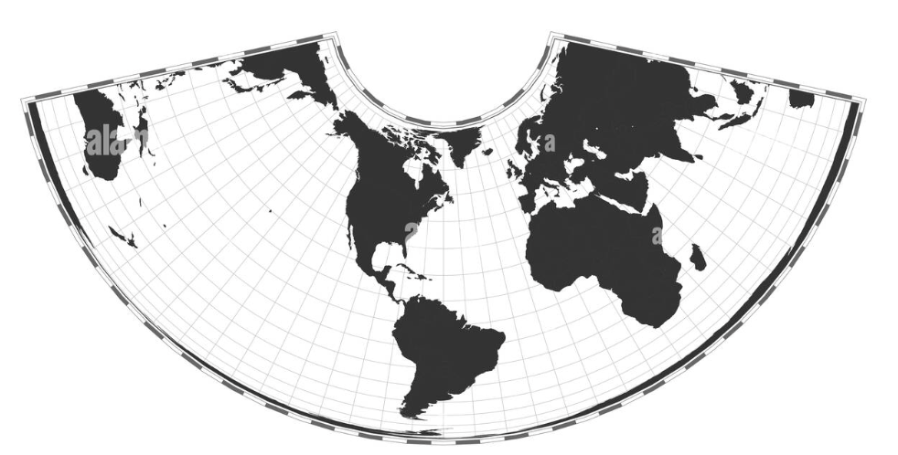
The Solution: Use equal-area for thematic maps
Rule: If you shade areas, you MUST use an equal-area projection.
The True Size of Countries
Understanding Mercator Distortion
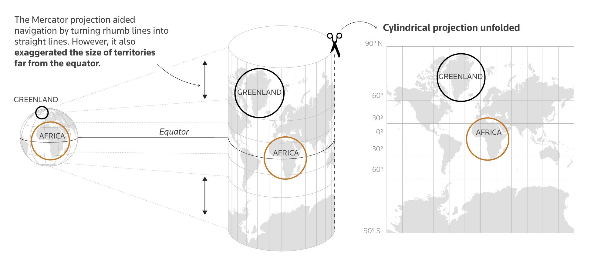
How Mercator exaggerates territories far from the equator
Part 4: Taxonomy of Thematic Maps
Type 1: Choropleth Map
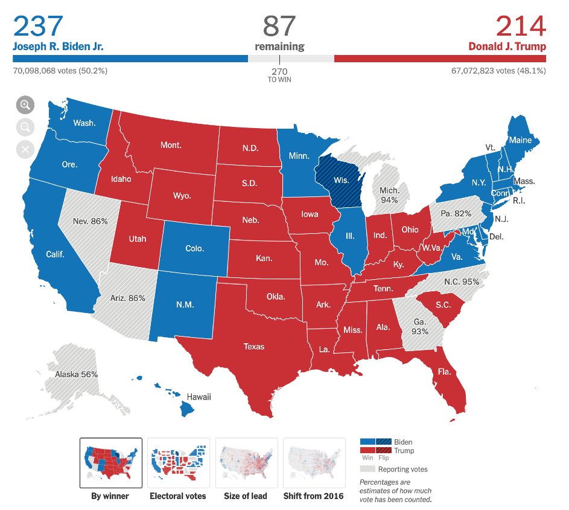
Definition:
Regions are shaded based on a value
Use Cases:
- Categorical data (winner/loser)
- Rates and percentages
- Density measures
Good for: Seeing broad regional patterns
Type 2: Proportional Symbol Map

Definition:
Symbols (e.g., circles) are scaled based on a value
Use Cases:
- Absolute quantities
- Magnitude comparisons
- Population distributions
Good for: Showing where the values are, not just the land area
Type 3: Cartogram
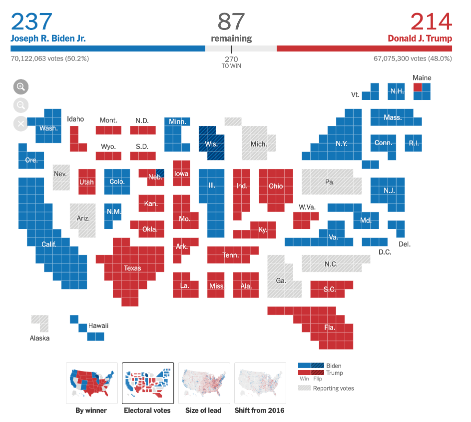
Definition:
Geometry (area) is distorted to represent a quantity
Use Cases:
- Population-based metrics
- Electoral votes
- Economic measures
Good for: De-emphasizing misleading land area
Type 4: Flow Map
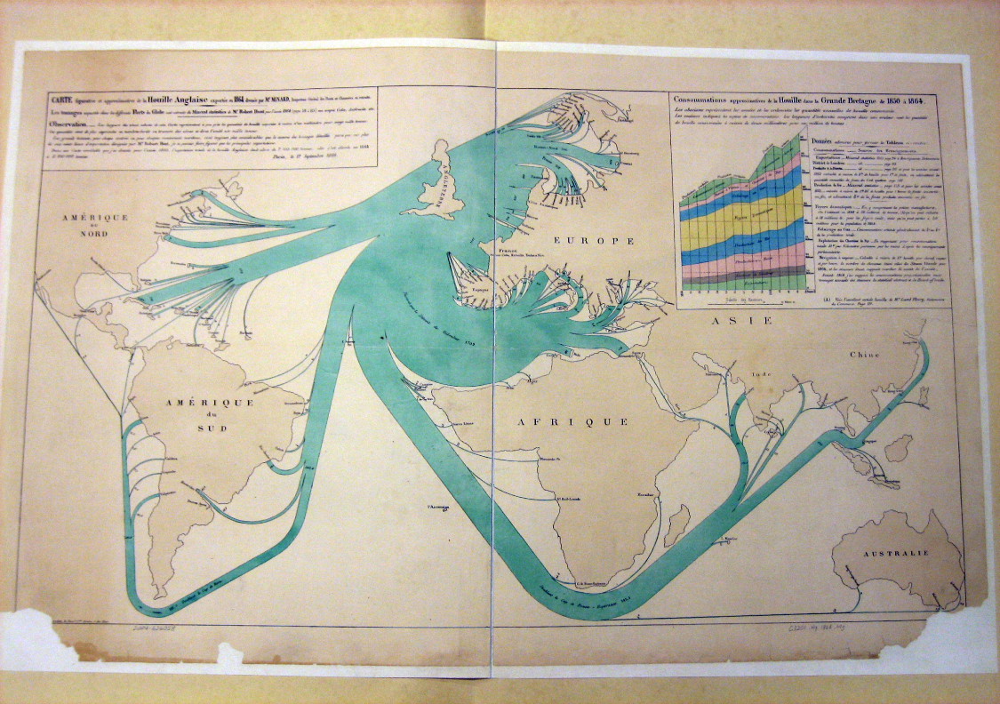
Definition:
Shows movement or connections between regions
Use Cases:
- Trade routes
- Migration patterns
- Transportation networks
Visual encoding: Line width ∝ quantity flowing
Part 5: Four Critical Pitfalls
Choropleth Maps: Handle with Care
Choropleth maps are the most common and most misused type of map.
Four Major Pitfalls:
- Normalization (Base Rate Bias)
- Classification (Binning)
- Color
- Geography (MAUP)
⚠️ Avoid these traps to create honest visualizations ⚠️
Pitfall 1: Normalization
The Base Rate Bias Problem
NEVER USE RAW COUNTS ON A CHOROPLETH MAP
A map of “Total Crimes” is just a map of “Total People”
You MUST normalize your data:
- Per Capita (e.g., crimes per 1,000 people)
- Density (e.g., crimes per square mile)
- Rate (e.g., unemployment rate, percentage)
Projection Distortion: An Example
Equirectangular
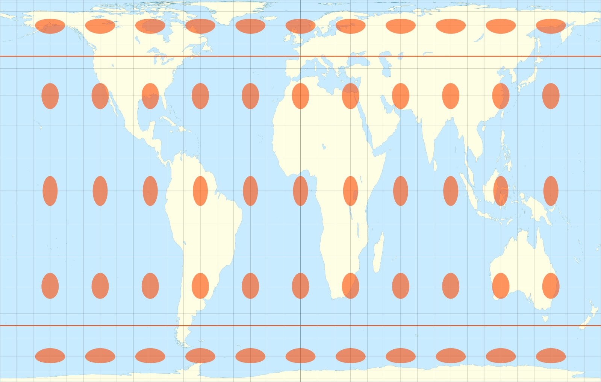
What we see: Evenly spaced, but circles stretch into ellipses
Mercator
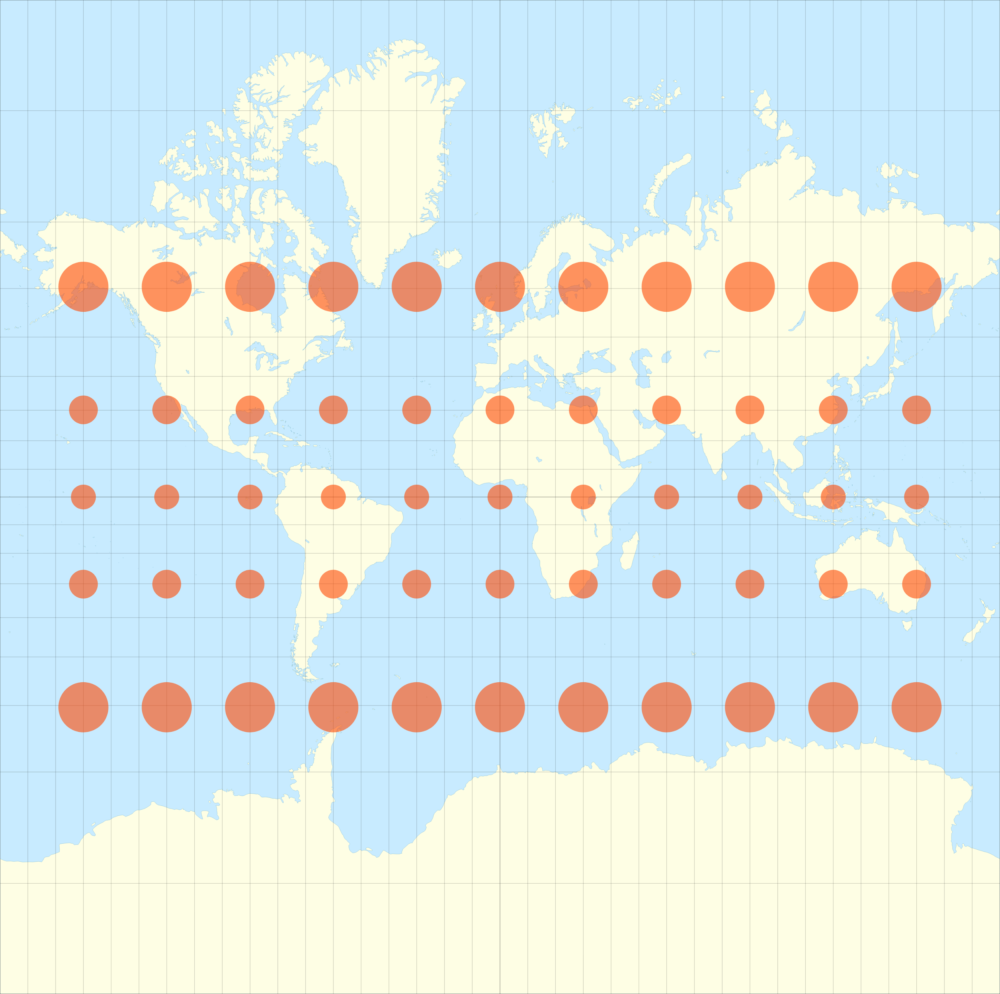
What we see: Same circles, sizes vary dramatically by latitude
The same principle applies to data: you must normalize to avoid misleading comparisons.
Pitfall 2: Classification (Binning)
How You Map Values to Color Changes the Story
Same data, same gradient. Only the color stops move.
Min / Max: color is linear in the value. Honest about size, but skewed data look uniformly pale; only outliers stand out
Median, quartiles, deciles: stops pinned at percentiles. Contrast goes to the crowded 4–8% middle; the map shows rank, and outliers disappear
Continuous scales, not bins. Classing is next.
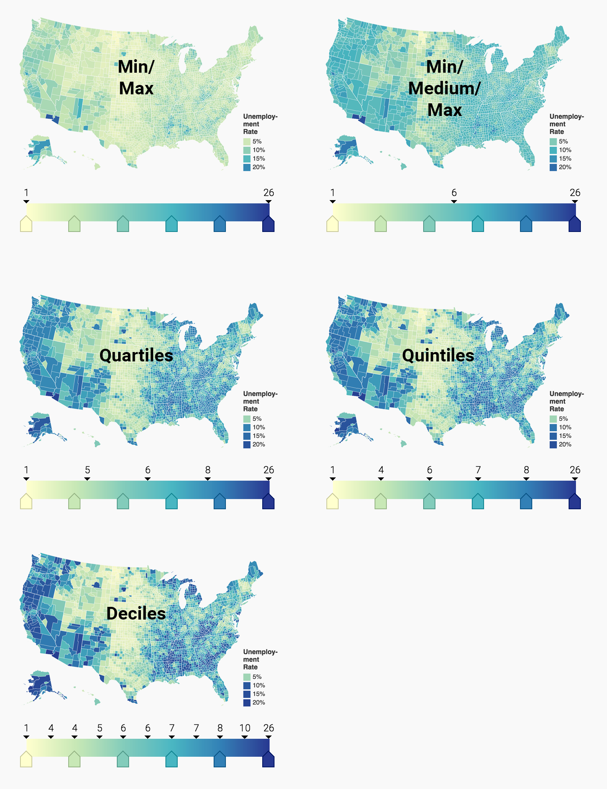
After Muth, L. C. (2022). How to choose an interpolation for your color scale. Datawrapper Blog.
BirdVis: The Same Problem, Over Time
One color range can’t serve both dates: 0–0.7 shows May, 0–0.1 shows September.
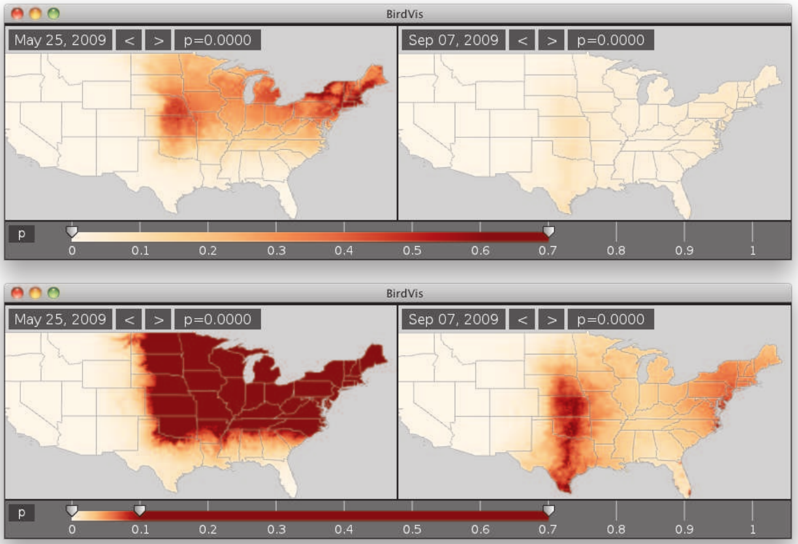
Ferreira et al. (2011). BirdVis, IEEE TVCG 17(12), Fig. 3. doi:10.1109/TVCG.2011.176
Classing: Same Data, Same Colors, Three Breaks
Five classes each. Only the break values change.
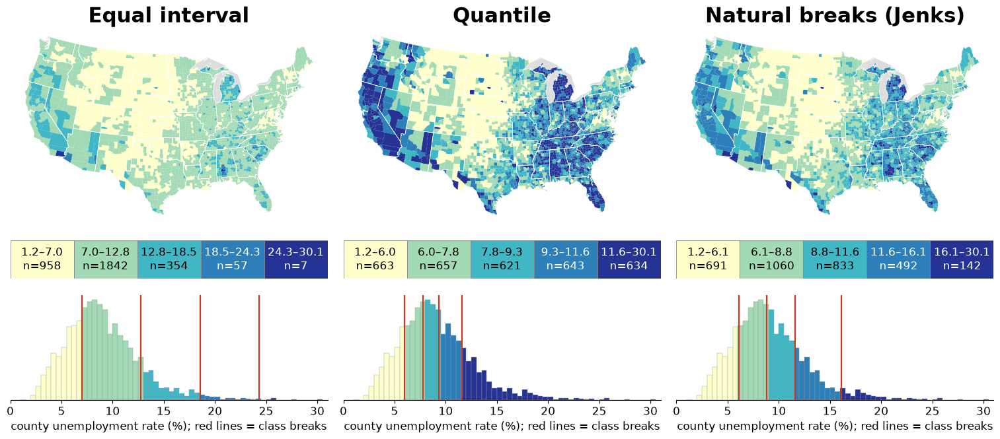
Data: BLS LAUS county rates (≈2009) via vega-datasets; breaks by mapclassify
Classification Methods Compared
| Method | Best For | Pitfall |
|---|---|---|
| Equal Interval | Evenly distributed data | Dominated by outliers |
| Quantile | Ranking & comparison | Hides natural clustering |
| Natural Breaks | Data with natural groups | Can be arbitrary with uniform data |
| Manual | Expert knowledge | Subjective, hard to defend |
Key Takeaway
There is no single “right” method, but you must be aware of your choice and able to defend it.
Pitfall 3: Color
Stop Using Rainbow Color Scales
❌ BAD: Rainbow
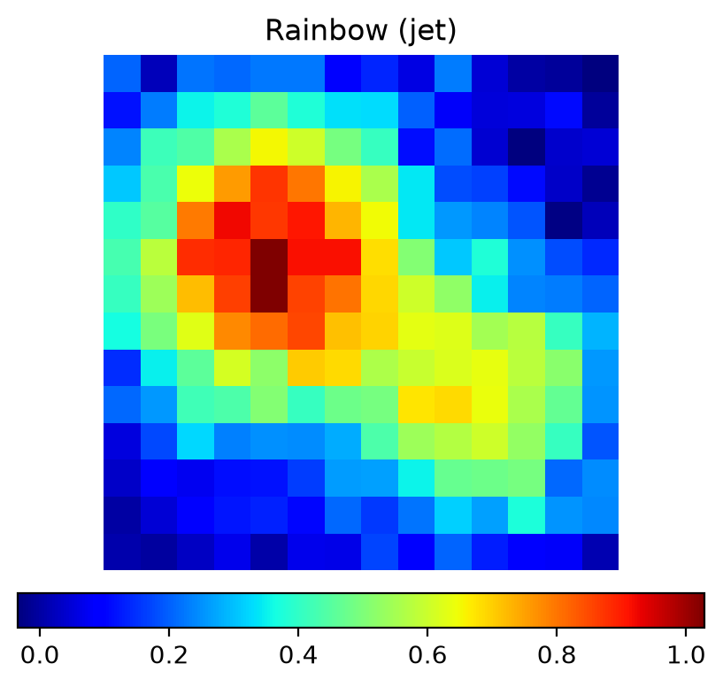
- Not perceptually uniform
- No intuitive order (is yellow > green?)
- Creates false boundaries
- Misleading visual jumps
✓ GOOD: Sequential
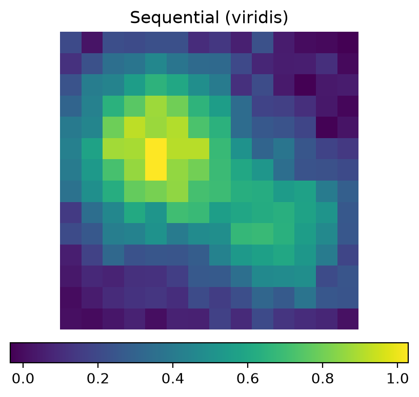
✓ GOOD: Diverging
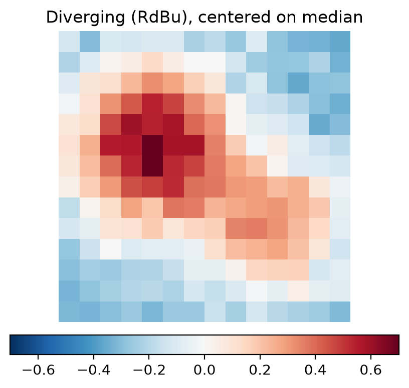
Real Data: What the Rainbow Hides
Same county unemployment data, three scales. Bottom row: lightness only.
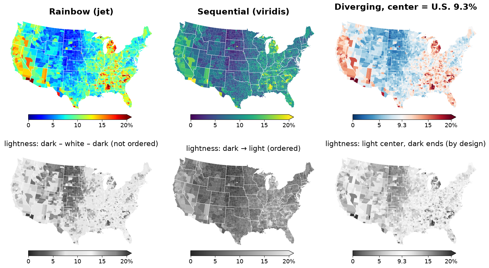
Borland & Taylor (2007). Rainbow color map (still) considered harmful. IEEE CG&A. Data: BLS LAUS (≈2009)
Choose the Right Color Scale
Sequential (Light → Dark)
For data from low to high with no meaningful middle:
- Population density
- Income levels
- Temperature (0-100°F)
Examples: Viridis, Blues, YlOrRd
Diverging (Color A → Neutral → Color B)
For data with a meaningful midpoint:
- Above/below average
- Gain/loss
- Pro/con
Examples: RdBu (Red-White-Blue), BrBG, PiYG
Use ColorBrewer
colorbrewer2.org provides perceptually-uniform, colorblind-safe palettes
Pitfall 4: Geography (MAUP)
The Modifiable Areal Unit Problem
Large, sparse regions visually dominate small, dense regions
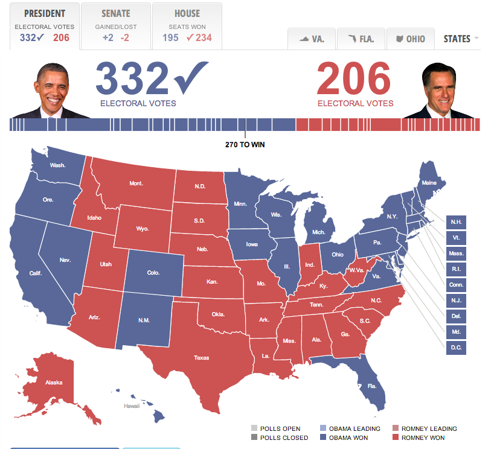
The Problem:
- Your eyes are drawn to area, not value
- Rural counties: few people, huge land area
- Urban counties: millions of people, tiny area
- This map shows land area colored by votes, not votes
Solutions to the Geography Problem
❌ Misleading

Land area dominates
✓ Solution 1: Symbols
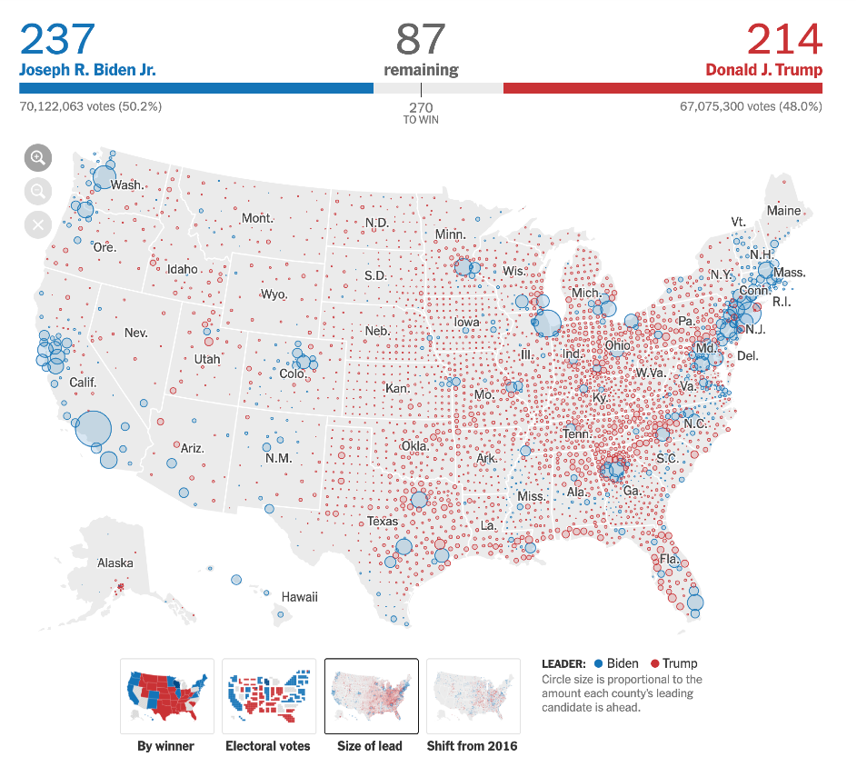
Shows where votes are
✓ Solution 2: Cartogram

Distorts geography by value
Uniform Cells Instead of Counties: Uber’s H3
Replace arbitrary regions with a grid of equal hexagons: count events per cell.
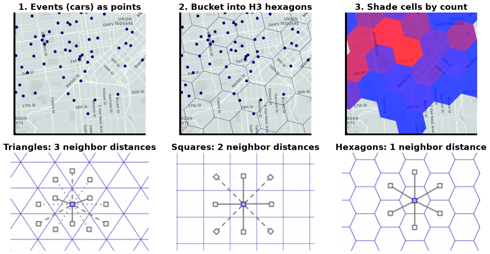
Figures from Brodsky, I. (2018). H3: Uber’s Hexagonal Hierarchical Spatial Index. Uber Engineering Blog. Library: h3geo.org
Same Crashes, Three Cell Sizes
Change the cell size and the “worst” place moves.
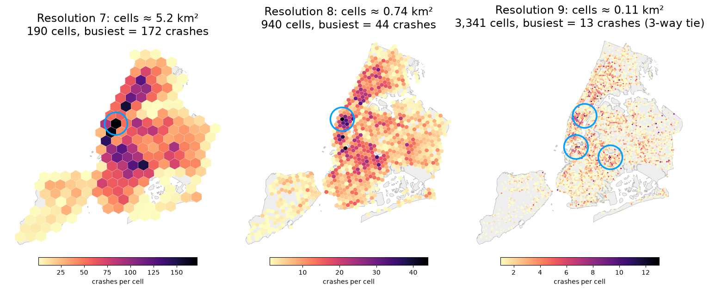
Data: NYC Open Data, Motor Vehicle Collisions – Crashes (Sept 2025, 7,289 with coordinates); cells via H3
Part 6: Beyond Geographic Accuracy
Sometimes, the Best Map Abandons Geography
Beck’s London Tube Diagram (1933)
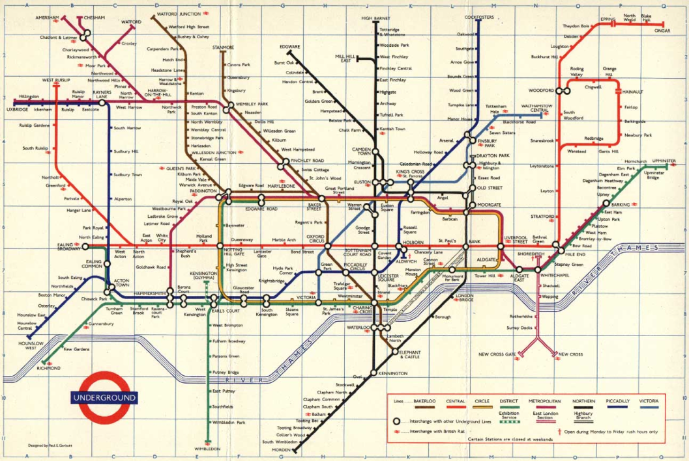
Geographically “wrong” but topologically “right”
What Beck realized:
- For subway riders, exact geographic paths don’t matter
- What matters: sequence of stops and where to transfer
His innovations:
- Straightened lines
- Regularized angles (45° or 90°)
- Even spacing between stations
- Prioritized topology over geography
Bridge to Next Lecture: Urban Visualization
- Today: Geographic maps (accurate spatial representation)
- Next week: Urban visualizations (prioritize usability and patterns)
- Week 10: 3D city models & simulation (linking 3D form with 2D data views)
The tube map is our bridge: it shows that sometimes the most effective visualization deliberately distorts reality to better serve the user’s task.
Summary & Key Takeaways
Five Critical Lessons
- Use a map only when the spatial question matters
- Bar charts are better for ranking and lookup
- Projections always distort—choose wisely
- Equal-area for choropleths (if you shade areas)
- NEVER use raw counts on choropleths
- Always normalize: per capita, density, or rate
- Choose classification and colors carefully
- Binning method changes the story
- Sequential vs. diverging scales
- Geography itself can mislead (MAUP)
- Consider symbols, cartograms, or other encodings
Be a Critical Consumer
When you see a map, ask:
- What’s the projection?
- Is it normalized?
- What’s the classification method?
- What’s the color scale?
- Is land area misleading the message?
When you make a map, remember:
- Is a map the right choice?
- Have I used equal-area projection?
- Have I normalized my data?
- Are my bins defensible?
- Are my colors perceptually uniform?
Next Time: Urban Visualization: Flows, Time & Interactivity
Further Reading
Essential Resources
Choropleth Map Best Practices
- Datawrapper Guide to Choropleth Maps
- Comprehensive guide to creating effective choropleth maps
- Covers normalization, classification, and color choices
- Practical examples and common pitfalls
When Not to Use Maps
- When Maps Shouldn’t Be Maps by Matthew Ericson (NYT)
- Critical discussion of map vs. alternative visualizations
- Real-world examples from data journalism
- Decision framework for choosing visualization types
Interactive Tools
- Tissot’s Indicatrix Explorer - Interactive projection distortion
- The True Size Of… - Drag countries to see size changes
Acknowledgments
Course Materials
This lecture was developed using materials from:
- Prof. Enrico Bertini (NYU Tandon)
- Visualizing Geographical Data lecture slides
- Information Visualization course materials
- Prof. Jeff Heer (University of Washington)
- CSE512: Data Visualization course
- Maps and Cartography lecture materials
SUPPLEMENTAL MATERIAL
Implementation & Tooling
Part 7: When to Use a Map?
The Fundamental Question
Not all geographical data needs a map.
The Trade-off
Maps use the x and y spatial dimensions to encode geography.
This means x and y cannot be used to encode other data variables (unlike a bar chart or scatterplot).
So when is a map the right choice?
When to Use a Map: Decision Framework
✓ Good Use: Spatial Questions
- “How are these phenomena clustered?”
- “What is near this location?”
- “How does this value change continuously over a region?”
- “Where is the path from A to B?”
- “What are the boundaries between regions?”
Use a map when: The spatial relationship is the question.
✗ Bad Use: Aggregate Comparisons
- “Which state has the highest value?”
- “What are the top 5 regions?”
- “How do these rank?”
Use a bar chart when: You need precise comparisons or rankings.
Why? Maps introduce area bias—Montana looks more “important” than Rhode Island simply due to land area.
Part 8: Geographic Data Formats
GeoJSON: The Web Standard
GeoJSON is the lingua franca of web mapping.
- It’s a JSON format that describes geographic features
- Human-readable and machine-parsable
- Supported by nearly all modern mapping libraries
Key Components
FeatureCollection: A list of all featuresFeature: A single geographic “thing” (park, city, road)geometry: The shape (Point,LineString,Polygon)properties: Non-spatial data (name, population, ID)
GeoJSON Structure: Example
{
"type": "FeatureCollection",
"features": [
{
"type": "Feature",
"properties": {
"name": "NYU Bobst Library",
"type": "Library"
},
"geometry": {
"type": "Point",
"coordinates": [-73.997421, 40.729454]
}
},
{
"type": "Feature",
"properties": { "name": "W 4th Street", "type": "Street" },
"geometry": {
"type": "LineString",
"coordinates": [
[-74.000277, 40.731868],
[-73.997873, 40.731557]
]
}
},
{
"type": "Feature",
"properties": { "name": "Washington Square Park" },
"geometry": {
"type": "Polygon",
"coordinates": [
[
[-73.999, 40.732], [-73.996, 40.732],
[-73.996, 40.730], [-73.999, 40.730],
[-73.999, 40.732]
]
]
}
}
]
}TopoJSON: Optimized Geography
TopoJSON is an optimized version of GeoJSON.
Key Advantages
- Compressed: Much smaller file sizes
- Topology-aware: Stores shared boundaries only once
- Better for web: Faster downloads and parsing
The Insight
Instead of storing the border between Colorado and Utah twice, TopoJSON stores the arc once and notes it’s shared by both states.
When to Use
- Large geographic datasets (countries, states)
- Web applications (file size matters)
- When features share boundaries
Tools
- MapShaper: Convert, simplify, and edit
- topojson-client: Convert back to GeoJSON
Part 9: Data Classification Methods
The Binning Problem
For choropleth maps, how you “bin” your data into color classes can completely change the story.
Same data. Different bins. Different conclusions.
Classification Methods Compared
Equal Interval
Divides the range into equal-sized steps (e.g., 0-10, 10-20, 20-30).
- ✓ Easy to understand and explain
- ✗ Problem: Outliers can skew all data into one or two bins
Quantile (Equal Count)
Puts the same number of data points in each bin.
- ✓ Good for showing relative ranking
- ✗ Problem: Can be misleading if values are naturally clustered
Jenks Natural Breaks
Finds “natural” clusters/gaps in the data using statistical optimization.
- ✓ Often the most honest default
- ✗ Problem: Can be arbitrary if data is uniformly distributed
Choosing Your Classification
| Method | Best For | Watch Out For |
|---|---|---|
| Equal Interval | Evenly distributed data; meaningful intervals | Outliers dominating the map |
| Quantile | Ranking; highly skewed data | Hiding natural clustering; arbitrary bin edges |
| Jenks Natural Breaks | Data with natural groups/gaps | Uniform data; hard to explain to audience |
| Manual | Expert knowledge; specific breakpoints | Subjectivity; cherry-picking |
Key Takeaway
Always justify your choice. Show the data distribution (histogram) and explain why your classification makes sense for your story.
Part 10: Practical Implementation with Leaflet.js
Leaflet.js: Simple Web Mapping
Leaflet is a lightweight, open-source JavaScript library for interactive maps.
- Simple API: Easy to learn, powerful results
- Tile-based: Handles the “slippy map” (zoom, pan) automatically
- Extensible: Plugins for everything from clustering to heat maps
- Perfect for: Adding interactive maps to web applications
Let’s build a simple example using our NYU GeoJSON data.
Leaflet: HTML Setup
<!-- 1. Include Leaflet CSS & JS from a CDN -->
<link rel="stylesheet"
href="https://unpkg.com/leaflet@1.9.4/dist/leaflet.css"/>
<script src="https://unpkg.com/leaflet@1.9.4/dist/leaflet.js"></script>
<!-- 2. Style the map container to fill the screen -->
<style>
#map { height: 100vh; }
</style>
<!-- 3. Create the map div -->
<body>
<div id="map"></div>
</body>Leaflet: Initialize the Map
Leaflet: Add GeoJSON Data
// 3. Define our GeoJSON data
const myGeoJSON = { /* ... from example.geojson ... */ };
// 4. Add GeoJSON layer to the map
L.geoJSON(myGeoJSON, {
// For each feature, bind a popup with its name
onEachFeature: function (feature, layer) {
if (feature.properties && feature.properties.name) {
let popup = '<h4>' + feature.properties.name + '</h4>';
popup += '<p>' + feature.properties.description + '</p>';
layer.bindPopup(popup);
}
}
}).addTo(map);
// Points, lines, and polygons are automatically styled
// Click any feature to see its popup
// Pan and zoom the map to exploreLive Demo
Let’s see it in action!
Open: examples/leaflet_example.html
- Base map tiles loading
- Pan and zoom controls
- GeoJSON features rendered:
- Point: NYU Bobst Library (red circle)
- LineString: W 4th Street (blue line)
- Polygon: Washington Square Park (green area)
- Click any feature to see its popup